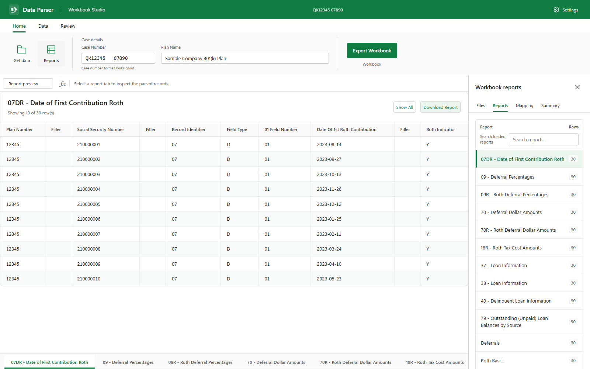
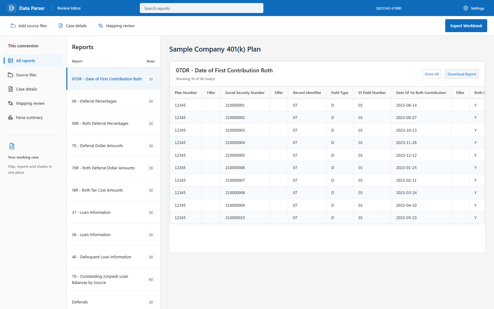
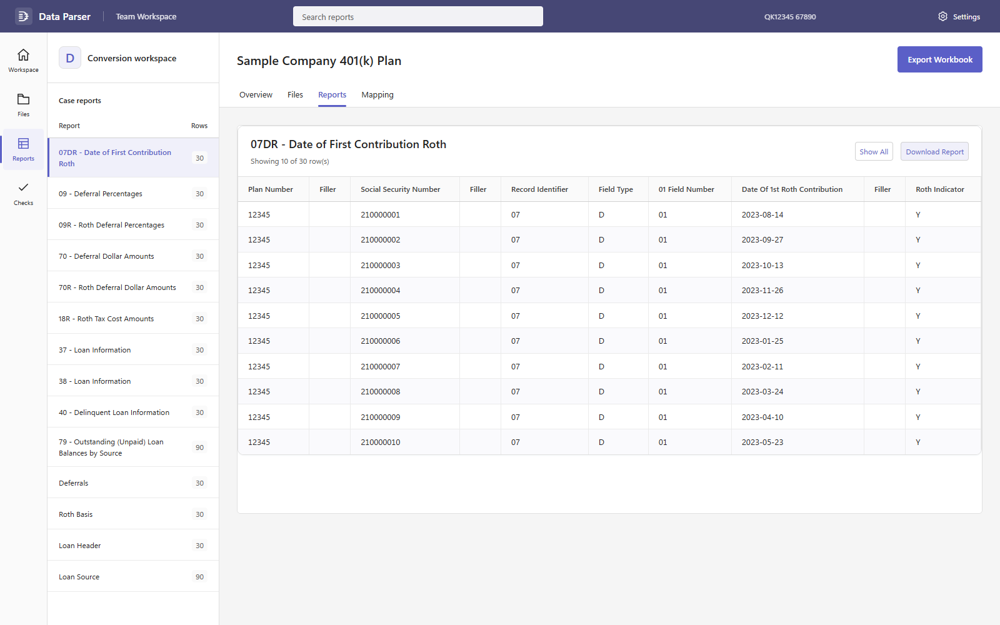
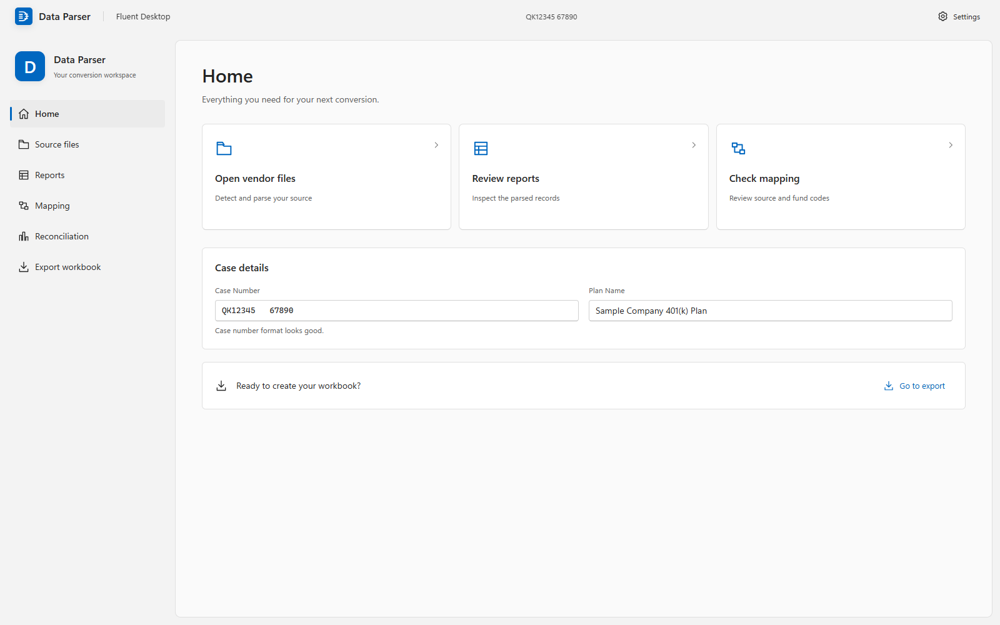
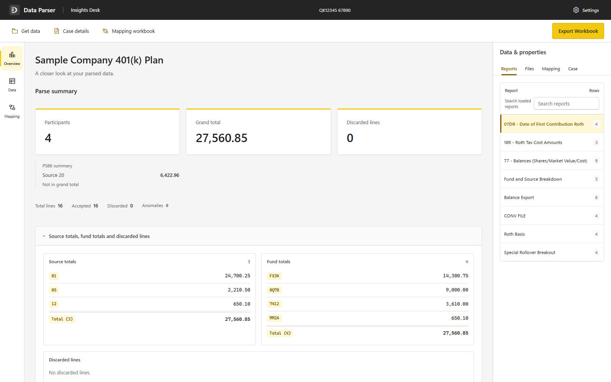

A familiar place to get work done.
Five new structures, inspired by the Microsoft apps you already know. Open any one to use it with your files.

Workbook Studio
A familiar ribbon, a spacious worksheet and report tabs along the bottom. Files and checks live in a task pane.

Review Inbox
Move through reports like an inbox. Folder navigation, a searchable report list and a large reading pane sit side by side.

Team Workspace
A compact app rail, report channels and a tabbed case workspace. Switch between overview, files, reports and mapping.

Fluent Desktop
A calm home screen with useful shortcuts, Windows-style navigation and dedicated pages for each part of the conversion.

Insights Desk
Reconciliation takes the main canvas. Switch to report data while keeping the file, mapping and report panes close at hand.